Почему КЕРРИ?
ЧТО ЗА ДОТА?
Defense of the Ancients (с англ. «Оборона Древних», сокращённо DotA) — командная тактико-стратегическая игра с элементами компьютерной ролевой игры, в которой каждый игрок управляет одним героем, и, если герой имеет соответствующие способности, некоторым количеством дополнительных существ. Во время игрового процесса, с течением времени и в зависимости от успешности своих действий героям помогают юниты, управляемые компьютером, которые называются «крипы» и БЛАБЛАБЛА - гласит WiKi. Переводя на человеческий, дота - командная игра, в которой две тимы по пять человек убивают все, что не подсвечивается, как союзное существо в целях добычи золота и повышения уровня. Игра заканчивается когда разрушается "трон" одной из команд - Сил Света или Сил Тьмы. Этот трон находится на базе и со всех сторон обставлен защитными башнями...Каждую новую игру абсолютно все начинается сначала, первые 10-15 минут каждый герой на карте еще слаб и отличен от другого, потенциал каждого раскрывается в разное время по-разному, в зависимости от времени игры, атрибута, роли героя и команды. Пять человек - пять ролей: три несущих - основа и две поддержки. Подробнее о ролях...
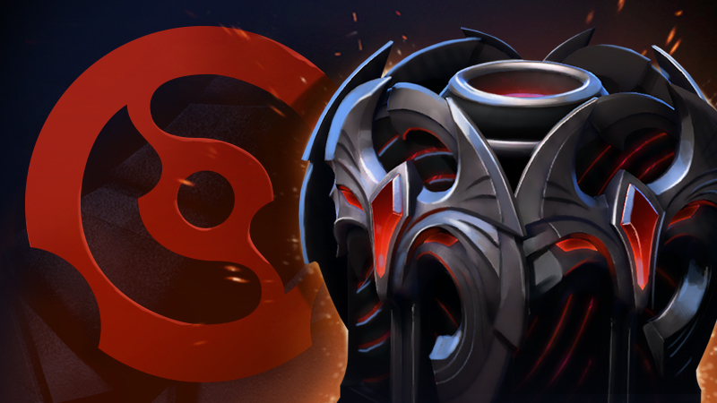
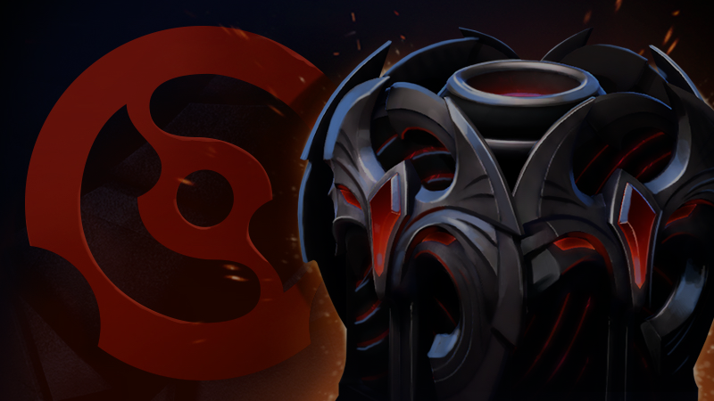
Фэнтези-сокровищница зимнего тура проф. сезона
В сегодняшнем обновлении мы выпускаем новую сокровищницу Winter Lineage Treasure, призванную отметить стратегические достижения в фэнтези-лиге зимнего тура 2021–2022.
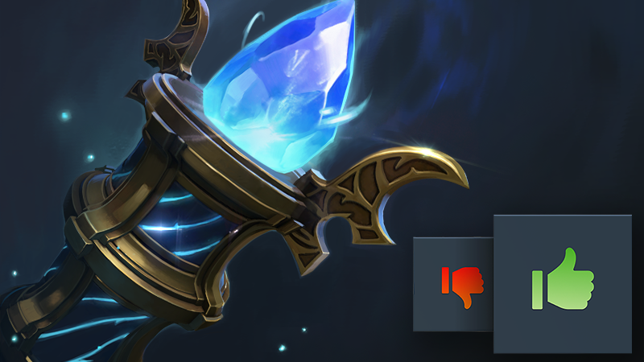
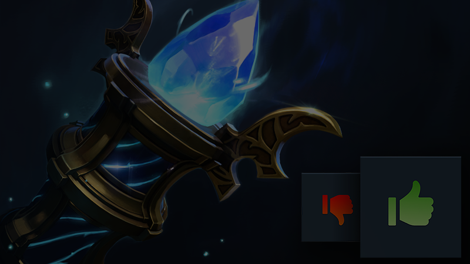
Голосование за Collector's Cache
В мастерской Dota 2 просто неимоверное количество качественных работ, и многие из них готовы украсить возвращение Аганима...
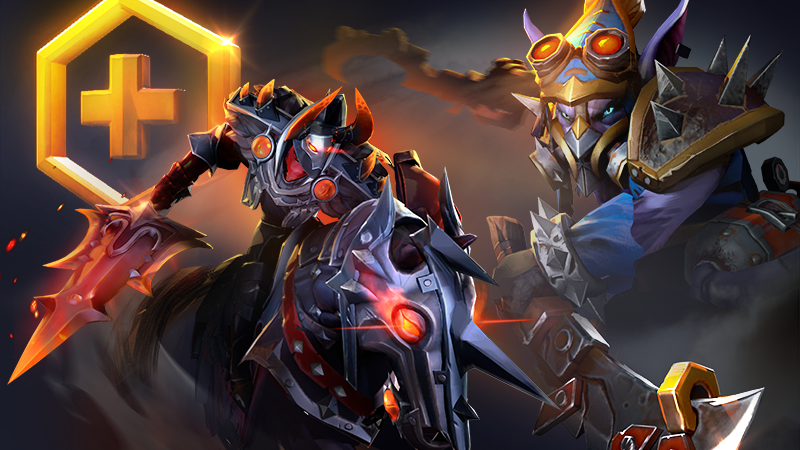
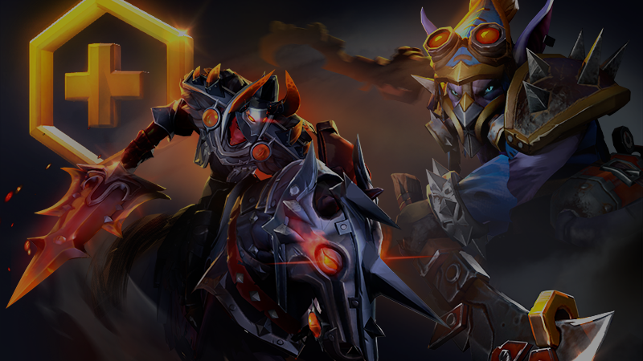
Обновление Dota Plus: зима 2021
Дни всё короче, а ветер всё холоднее, но битва на линиях не прекращается — а значит, пришло время очередного сезонного обновления Dota Plus, которое поможет пережить снежные ночи.
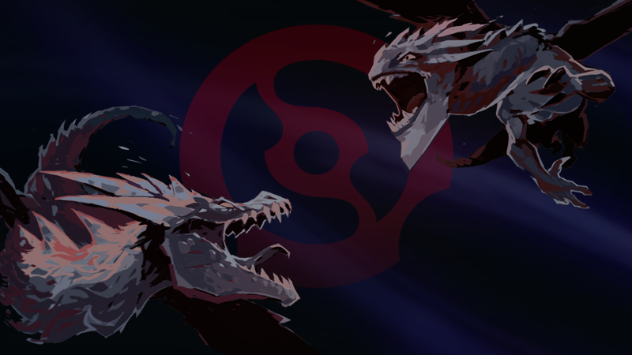
Зимний тур 2022 года
Прошло уже больше месяца с тех пор, как были коронованы чемпионы, а значит, пора готовиться к новым зрелищам. Первый тур грядущего профессионального сезона стартует на следующей неделе
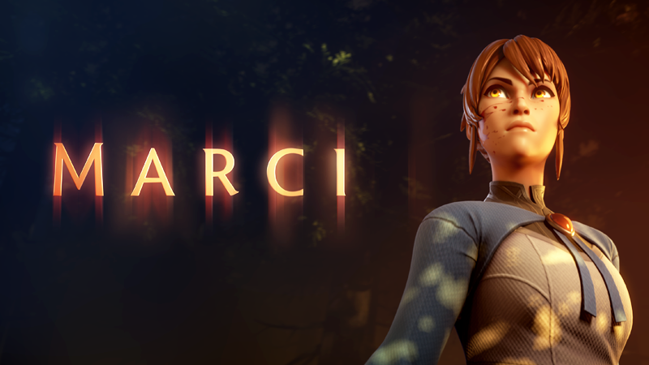
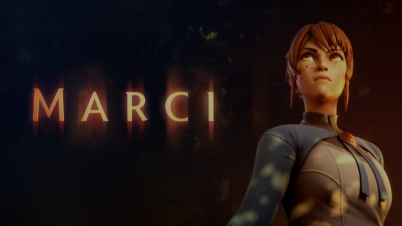
Марси вступает в бой
Сегодня в битву Древних врывается Марси — новейшая героиня прямиком из аниме «DOTA: кровь дракона», которая всем докажет, что узы преданности придают великую силу.
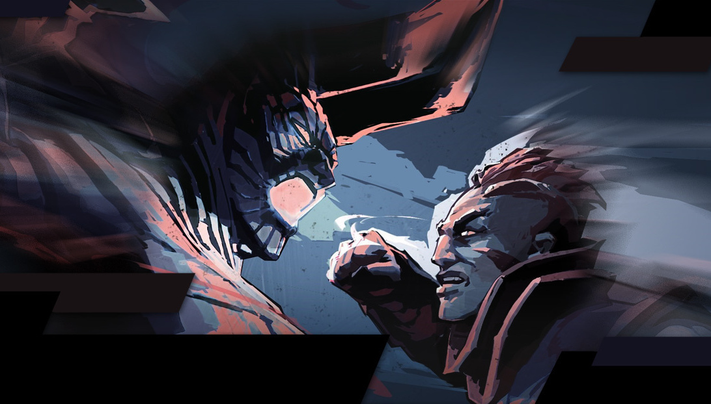
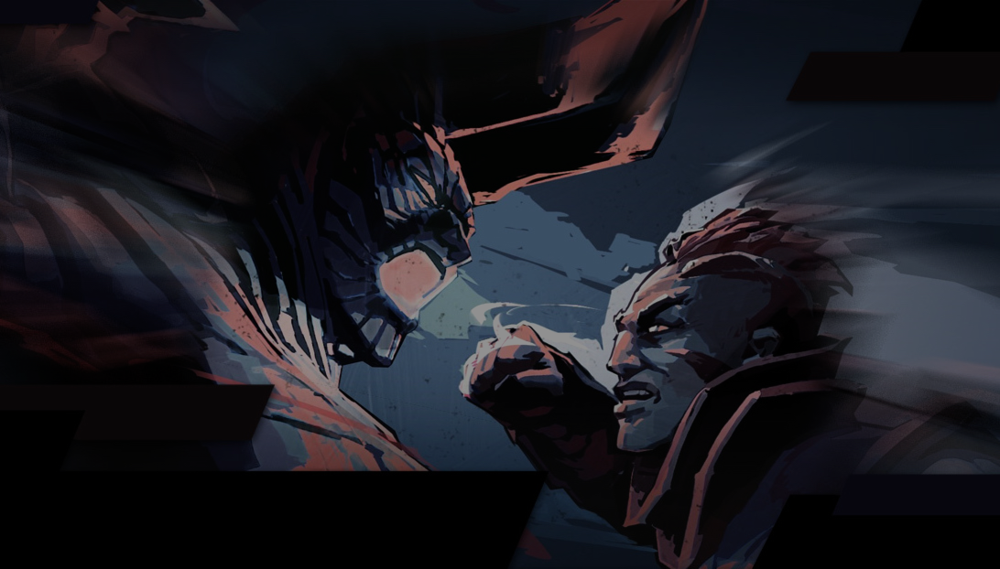
Профессиональный сезон 2021–2022
Чуть меньше недели назад мы объявили, что первый мейджор профессионального сезона 2021–2022 отменяется.
Фэнтези-сокровищница зимнего тура проф. сезона
В сегодняшнем обновлении мы выпускаем новую сокровищницу Winter Lineage Treasure, призванную отметить стратегические достижения в фэнтези-лиге зимнего тура 2021–2022. Эта сокровищница содержит особые наборы, стилизованные под текущий профессиональный сезон, и выдаётся за каждые 3 фэнтези-уровня.
Завершающие сезон региональные финалы Западной Европы, Юго-Восточной Азии и Южной Америки пройдут с 11 по 13 февраля, а в Китае, Восточной Европе и Северной Америке — с 18 по 20 февраля. Обратите внимание, что это ваш последний шанс заработать фэнтези-уровни! Кроме того, мы повысили число наград за предстоящий период до умопомрачительных 12 фэнтези-уровней за попадание в лучшие 10%, 9 уровней за попадание в лучшие 25% и 6 уровней за попадание в лучшие 50%. Покажите свою смекалку и получите целую кучу сокровищниц!
Расписание игр уже доступно на нашем киберспортивном портале, а момент закрепления составов стремительно приближается: они станут окончательными в пятницу, 11 февраля, в 03:00 МСК. Не забудьте сделать свой выбор.
Голосование за Collector's Cache Чтобы помочь сообществу в беспрестанной борьбе за порядок в мультивселенной, Аганим Великодушный представляет свой собственный боевой комплект — доступный только на этих выходных и содержащий внушительный бонус к уровням и бонусные сокровищницы. Каждый комплект содержит 60 уровней, 3 Immortal-сокровищницы, 3 сокровищницы Continuum Collection и 3 сокровищницы Ageless Heirloom. Он стоит всего 1080 рублей (14,99 долларов США) — на 70% дешевле, чем общая цена уровней и сокровищниц, — и каждый владелец боевого пропуска может купить по два таких комплекта. Это отличный способ добраться для таких наград, как особые крипы и катапульты на 94 уровне, личность для Mirana на 135 уровне, особые башни на 200 уровне, престижный набор для Hoodwink на 277 уровне, Arcana-набор для Drow Ranger на 333 уровне — и не только. Комплект доступен только на этих выходных (он перестанет продаваться в среду, 9 февраля), и сейчас самое время преумножить дары мультивселенной. Заглянем в будущее: обновление 7.31 мы планируем выпустить 23 февраля 2022 года, когда эффекты приключений Аганима сойдут на нет, а действие боевого пропуска завершится.
Обновление Dota Plus: зима 2021 Сегодняшнее обновление вводит в игру сокровищницу Collector's Cache с 18 наборами предметов, избранными сообществом, а также привносит в Лабиринт Аганима новые награды и изменения баланса. Более того, с сегодняшнего дня вы можете посмотреть на Netflix второй сезон «DOTA: Кровь дракона». Сокровищница Collector's Cache Голоса подсчитаны, величайший маг официально одобрил избранные наборы, а значит сокровищница Collector's Cache теперь доступна владельцам боевого пропуска «Лабиринт Аганима 2021». Она содержит 18 лучших наборов, за которые проголосовало само сообщество Dota 2. С каждой открытой сокровищницей ваши шансы получить дополнительную редкую награду всё выше. Откройте 15 — и получите сразу 36 уровней пропуска. Любой нераспакованный набор из этих сокровищниц можно обменять на 2000 боевых очков. Сокровищница «Лабиринт Аганима 2021: Collector's Cache» доступна во внутриигровом магазине за 180 рублей ($2,49) до окончания действия боевого пропуска. Все предметы из этой сокровищницы, кроме невероятно редкого набора для Phantom Assassin, нельзя обменять или выставить на продажу. Далее приведён список наборов-победителей и число полученных ими голосов, за исключением второго набора для Chaos Knight, который занял бы 5 место, но в итоге будет выпущен в будущем.
- Место Герой Число голосов
- 1 Chaos Knight 366 364
- 2 Ogre Magi 362 974
- 3 Dragon Knight 309 696
- 4 Phantom Lancer 308 474
- 5 Dawnbreaker 299 750
- 6 Clockwerk 287 363
- 7 Phantom Assassin 284 424
- 8 Razor 270 227
- 9 Ancient Apparition 256 453
- 10 Chen 246 221
- 11 Grimstroke 242 631
- 12 Broodmother 240 884
- 13 Mars 235 436
- 14 Rubick 233 860
- 15 Drow Ranger 224 878
- 16 Alchemist 217 552
- 17 Axe 215 059
- 18 Abaddon 209 704
Зимний тур 2022 года Прошло уже больше месяца с тех пор, как были коронованы чемпионы, а значит, пора готовиться к новым зрелищам. Первый тур грядущего профессионального сезона стартует на следующей неделе. Этот тур, который начнётся с региональных лиг и завершится зимним мейджором, станет первым из трёх на пути к The International 2022 года. На кону — отборочные баллы, которые обеспечат командам-участницам уверенный путь к приглашениям на главный турнир следующего года. Чтобы помочь сообществу Доты проникнуться соревновательным духом, мы добавили фэнтези-лигу из компендиума в профессиональный сезон, чтобы вы смогли играть на протяжении каждого тура. Во время профессионального сезона фэнтези-лига работает почти так же, как ежегодно во время The International. Основное отличие — то, что фанаты могут соревноваться в разных регионах, а результаты рассчитываются за определённый период времени (обычно за неделю), а не за день. Более подробную информацию о том, как играть, вы можете прочесть ниже. Основы На каждый период фанаты создают фэнтези-команду из двух игроков основы, одного игрока центральной линии и двух игроков поддержки. Игроки, карточки которых вы поместили в свою фэнтези-команду, зарабатывают очки в зависимости от своих успехов за этот период. За бонусы серебряных и золотых карточек даются дополнительные очки. Обычно период длится одну неделю, за исключением праздничного сезона в конце года. Наборы карточек игроков Все игроки получают 10 начальных наборов. Дополнительные наборы карточек игроков можно зарабатывать каждый день, выигрывая в Доту. Наборы команды можно будет купить напрямую в разделе «ПРОСМОТР» вкладки «КАРТОЧКИ ИГРОКОВ» в ближайшем будущем, когда команды отправят нам свои предметы для клуба поддержки. При открытии набора вы получите карточки игроков из выбранного вами региона. Региональные фэнтези-лиги В каждом профессиональном регионе проходит своя фэнтези-лига с отдельными карточками игроков и уникальным составом участников. Вы можете принять участие в нескольких региональных лигах и зарабатывать фэнтези-уровни на основании своего лучшего результата в фэнтези-лиге за каждый период. Например, если вы оказываетесь в лучших 10% одной лиги и в лучших 50% другой, вы получите очки за попадание в 10% лучших. Региональные награды не суммируются. По окончании каждого периода вы получите уровни в зависимости от числа фэнтези-очков за этот период. Награды выдаются за достижение определённого фэнтези-уровня. Очки за матчи Начисление очков за сезонные фэнтези-лиги происходит немного иначе, чем во время The International. Все игры первого дивизиона во время зимнего тура 2022 года входят в фэнтези-лигу. В матче из трёх игр учитываются результаты только двух лучших игр. Если за период команда играет более чем в одном матче, учитывается только самый высокий результат. В связи с тем, что команды вынуждены находиться на карантине после участия в The International, первый дивизион этого года в Китае начнётся позже. Мы работаем над тем, чтобы участники китайской фэнтези-лиги могли получить такое же количество наград, как остальные игроки. Награды Если ваша фэнтези-команда попадёт в 10% лучших, вы получите три фэнтези-уровня. Если ваша фэнтези-команда попадёт в 25% лучших, вы получите два фэнтези-уровня. Если ваша фэнтези-команда попадёт в 50% лучших, вы получите один фэнтези-уровень. Каждый третий уровень игроки будут зарабатывать по одной сокровищнице зимнего тура 2022 года (они будут выданы позже). Каждые два уровня игроки будут получать по 500 осколков. Не забудьте следить за предстоящими событиями в разделе просмотра на главной странице зимнего тура. Между тем, мы почти закончили работу над следующим боевым пропуском, который будет выпущен в ближайшие недели. Мы готовим для вас особую головоломку, которой нам не терпится поделиться.
Марси вступает в бой Сегодня в битву Древних врывается Марси — новейшая героиня прямиком из аниме «DOTA: кровь дракона», которая всем докажет, что узы преданности придают великую силу. Марси не пожалеет своих кулаков, чтобы в бою защитить своих товарищей. Её способности и не только можно найти на посвящённой ей странице. Обновление 7.30e Сегодня также выходит обновление игрового процесса 7.30e. Полный список изменений можно найти на странице обновления. Treasure of the Wordless Trek В продажу поступила новая сокровищница Treasure of the Wordless Trek. Она стоит 180 рублей ($2,49) и содержит наборы предметов для Zeus, Sven, Puck, Lina, Brewmaster, Clockwerk, Lich, Pangolier, Templar Assassin и Ancient Apparition, а также очень редкий набор для Spectre и крайне редкий — для Razor. Чемпионы The International Они прошли путь от отборов восточной Европы до чемпионства на The International. Мы хотим официально поздравить Team Spirit с этим невероятным достижением. В решающей пятой игре одного из самых завораживающих гранд-финалов за всю историю игры Team Spirit одержали победу над PSG.LGD, командой, которую многие могли бы назвать самой устрашающей в мире. Как и стоило ожидать, выбор героев в последней игре следовал двум самым популярным стратегиям турнира, но в итоге Magnus первым пиком от Team Spirit оказался на голову выше хвалёной парочки Tiny/Lycan от PSG.LGD. Они завоевали последнюю игру турнира (и Эгиду чемпионов) так же, как и свою первую — в своём агрессивном и зрелищном стиле, который с каждым днём становился всё лучше и не прекращал радовать фанатов Доты со всего мира. Вот они, завоеватели почётнейшей награды, чьи имена навсегда войдут в историю и попадут на саму Эгиду чемпионов: 2021 — Team Spirit Илья Yatoro Мулярчук Александр TORONTOTOKYO Хертек Магомед Collapse Халилов Мирослав Mira Колпаков Ярослав Miposhka Найдёнов Вспоминая прошлое Если вы пропустили ту или иную часть турнира или же хотите пересмотреть невероятные моменты и восхитительные игры, просто откройте сайт The International, где можно найти записи каждого матча. Мы также сохранили множество видео, которые можно увидеть на YouTube в плейлистах основного этапа и развлекательных видео, а на официальных страницах Dota 2 в Instagram и Flickr вы найдете как новые фотографии, так и материалы с предыдущих турниров. Мы хотели бы поблагодарить всех игроков, работников студии и всё сообщество Доты за то, что вы вновь помогли воплотить этот праздник в жизнь. В этот раз дорога на The International была не без ухабов, но надеемся, что вы порадовались игре мирового уровня и контенту с трансляций так же сильно, как и мы сами.
Фэнтези-сокровищница зимнего тура проф. сезона Чуть меньше недели назад мы объявили, что первый мейджор профессионального сезона 2021–2022 отменяется. На тот момент мы не предложили никакой альтернативы, которая могла бы восполнить недостаток призовых денег и отборочных баллов. Когда стало ясно, что LAN-турнир с необходимыми требованиями невозможно провести в срок, мы не были уверены в любой из альтернатив: перенеся мейджор на значительно более поздние даты, мы бы поступили нечестно по отношению к игрокам из команд, которые к тому моменту поменяют составы. Если бы мы провели глобальный онлайн-турнир, задержка между далёкими друг от друга регионами значительно повлияла бы на качество матчей и на их соревновательную значимость. Заменив мейджор на региональные или двухрегиональные турниры, мы бы исключили возможность межрегиональной игры, в которой более конкурентные регионы получали больше баллов для прохождения на The International. В частности, проведение двухрегиональных турниров может привести к ситуации, когда команды из сильного региона рисковали получить меньше баллов, из-за того что они играют с более сильным регионом, а команды из слабых регионов — наоборот, выигрывали при игре с более слабыми. Прислушавшись к отзывам команд и фанатов, мы быстро осознали, что расставили приоритеты неправильно и уделили недостаточно внимания участникам профессионального сезона. Мы сильно ошиблись. Просим прощения. Мы стремимся исправить ситуацию. Чтобы понять возможности и общие требования, мы провели переговоры с организаторами турниров и командами. Когда всем стало ясно, что идеального решения не найти, мы решили провести шесть региональных финалов. Региональные финалы профессионального сезона 2021–2022 пройдут в выходные двух недель: первая тройка регионов будет играть с 11 по 13 февраля, а вторая — с 18 по 20 февраля. Четыре лучшие команды из каждого региона сразятся в турнире с выбыванием после двух поражений и призовым фондом в 100 000 долларов США. Расписание региональных финалов: 11–13 февраля 2022 года: Западная Европа, Юго-Восточная Азия, Южная Америка; 11–13 февраля 2022 года: Китай, Восточная Европа, Северная Америка. Награды региональных финалов: 1 место: 50 000 долларов США + 250 отборочных баллов; 2 место: 25 000 долларов США + 130 отборочных баллов; 3 место: 15 000 долларов США; 4 место: 10 000 долларов США. Более подробную информацию сообщат организаторы турниров в каждом отдельном регионе. Поскольку команды из каждого региона получат одинаковое количество баллов, мы пересмотрели формат отборов на The International 11: Отборочные игры на The International пройдут как и запланировано — лучшая команда из каждого региона проходит на TI. Команды, занявшие вторые и третьи места, будут соревноваться на LAN-турнире, который пройдёт вскоре после отборов. Из двенадцати команд-участниц на The International 11 пройдут занявшие первое и второе место. Таким образом, в этом сезоне групповой этап The International 11 соберёт 20 команд (две группы по 10). После него выбывают четыре команды, а значит основной этап пройдёт без изменений. Эти изменения действуют исключительно на сезон 2021–2022 года и помогут внести баланс в процесс отбора, который пошатнуло отсутствие первого мейджора. Мы надеемся, что остальные события в этом году пройдут как запланировано, и в ближайшие недели сообщим вам информацию о втором и третьем мейджорах. И в заключение: обновление 7.31 выйдет вскоре после региональных финалов.